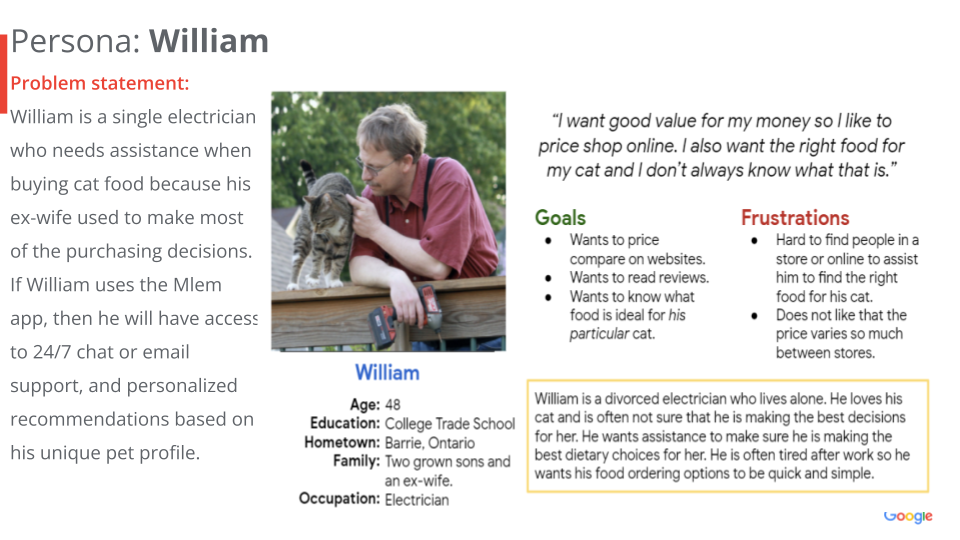

Project information
- Category: App Design
- Client: Google UX Design Professional Certificate Program
- Project date: 2022
Situation
This case study was created as part of the Google UX Design Professional Certificate Program.

Project Overview
Mlem is an e-commerce pet food delivery service iOS mobile app and fully responsive website intended to reduce barriers consumers face when purchasing pet products in bricks-and-mortar stores and pet supply websites.
Problem
Mlem solves problems users face when buying pet food. Some challenges faced by users in brick-and-mortar stores include a limited variety/supply, heavy packaging/difficulty bringing items home, limited customer service staff, and a lack of product reviews. With online pet food stores, challenges faced by users include a confusing interface, a lack of customer service, and limited product recommendations based on the unique needs of their pets.
Goal
The goal of the Mlem website and app is to create a user friendly interface where users feel comfortable and confident in their decisions from the moment they open the app until the time the pet food lands on their doorstep. The website and app provides pricing comparisons, product reviews, and price matching from a list of competitors to make value clear. Promotions and sales are also plentiful! The app also allows users to create a profile for their pet and then provides users with custom suggestions based on the unique (e.g., dietary, age specific) needs of their pets. Users can also automate the food purchasing process by enrolling in one of Mlem’s simple food delivery options. Users will be notified of deliveries and can also track their items.
My Role and Responsibilities
I acted as the sole designer for the Mlem responsive website and mobile application. Throughout the journey of app creation, I made sure to empathize with users and mirror their needs, motivations, hopes, fears, limitations, and goals. Peer review and feedback also helped inform the decision making process.Throughout the project, my responsibilities included user research and interviews, user flows, competitor analysis, wireframing, design iteration, and prototyping.

Process to Building Mlem
User Research Summary
I conducted five one-on-one interviews with pet owners to understand the processes and emotions they experience around purchasing pet food in order to discover ways that the Mlem app can solve their problems. Interview participants were comprised of males and females from a representative sample of pet owners of varying backgrounds, between the ages of 29 - 66. Two interview subjects were Millennials, two were Generation X, and one was a Baby Boomer since each generation makes up 35%, 32%, and 27% of the US share of pet owners, respectively. During interviews, I sought to identify common user behaviors and experiences to ensure that the Mlem app addressed user needs and frustrations as they relate to purchasing pet food. A sample of some of the open-ended questions I asked included: What do you like and dislike about online shopping? What do you consider the most challenging part about finding pet food items? What would make buying pet food easier? What features would you value in a pet store app?
What I learned from User Research
Prior to conducting user research, I thought that most pet owners would opt for more affordable options of the popular brands typically found in grocery and big-box stores. However, it appears as though three-quarters of Millennials (who make up the biggest share of the pet ownership market) prefer pet food with natural ingredients and transparent labelling. They opt for brands that promote themselves as organic, green products, non-GMO, grain-free, holistic, etc.

User Pain Points
User Personas - Hannah and William

User Empathy Map
This empathy map breaks down areas where the website/app can meet Hannah’s needs.

Aggregated User Empathy Map
This aggregated empathy map was created as an aggregate, or combination, of multiple one-user empathy maps. This aggregated user empathy map, assisted the designer to identify segments of the population who will use the website/app. The insights from the aggregated empathy map allowed the designer to identify themes to better empathize with the groups the Mlem website/appt is intended to assist.

User Journey Map - William
William is a 48 year old electrician. The journey map explores the various interactions William would have when purchasing cat food. By breaking down each interaction, I was able to identify his pain points and opportunities for design improvement. When researching, and empathising with, William I considered accessibility. I intend designed a product that people with disabilities can use and enjoy.

Competitive Audit
I conducted a competitive audit to explore my competitors’ strengths and weaknesses. The companies I selected to audit include Chewy.com, PetSmart, Ren's Pets, and Walmart.com. For each competitor, I collected data on the target audience, product offering, business size, unique value proposition, overall desktop website and mobile application experience, features, accessibility, user flow, navigation, brand identity, tone, and descriptiveness. I gained numerous insights into how I plan to design the accessibility, user flow, navigation, and brand identity for my Mlem app, based on the strengths and weaknesses of my competitors.
User Flow Diagram
The diagram below is the user flow I designed for the Mlem app based on informed research of user needs. Circles represent the actions that a user takes moving through my design. Rectangles show the screens in my digital product. Diamonds pose a question to the user and prompt them to make a decision. Lines with arrows tie the screens, actions, and decisions together to illustrate the flow of information across the design.